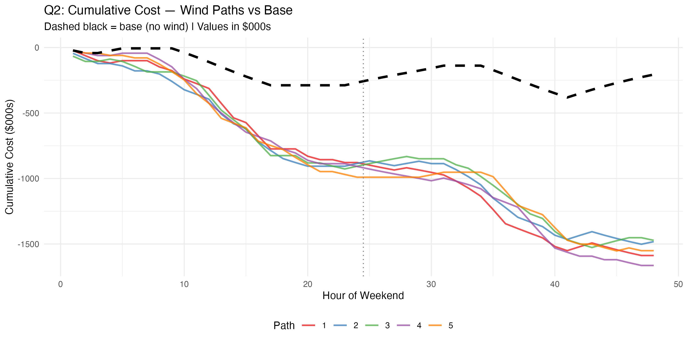

Grid Economics: Pump-Hydro Storage & Wind Flexibility
A stochastic dynamic program valuing a pump-hydro reservoir alongside a 3-state wind Markov chain over a 48-hour weekend, testing whether wind changes the reservoir's optimal dispatch policy and how much of its flexibility value survives when wind is abundant.
Problem Statement
A pump-hydro reservoir with 9 discrete storage levels (0–8) must be dispatched hour by hour across a 48-hour weekend, and must end the weekend back at full (level 8). Alongside it sits a wind generator whose output follows a 3-state Markov chain: calm (0 MW), moderate (up to 1,000 MW), or strong (up to 2,000 MW), always dispatched in full since it has zero marginal cost.
The question: does the presence of wind change the hydro facility's optimal dispatch policy (when it should generate, pump, or idle), and does it change how valuable the facility's flexibility actually is?
Methodology
The problem is solved as a stochastic dynamic program via backward Bellman recursion over the state (hour h = 1–48, storage s = 0–8, wind state w), with action space {generate, pump, idle}:
The recursion is finite-horizon with no discount factor, and requires the reservoir back at full (s = 8) by hour 48. The wind state evolves independently each hour according to the transition matrix below: a 0.5 probability of persisting, and 0.25/0.25 of moving to each other state.
| From \ To | Calm | Moderate | Strong |
|---|---|---|---|
| Calm | 0.50 | 0.25 | 0.25 |
| Moderate | 0.25 | 0.50 | 0.25 |
| Strong | 0.25 | 0.25 | 0.50 |
Solution
The optimal policy doesn't change with wind
The optimal action at every (hour, storage) pair is the same with or without wind: generate roughly hours 10–17 on Saturday and 34–41 on Sunday, pump overnight, idle at mid-price periods. Only the dollar cost of taking that action changes.
Storage trajectories are nearly identical
Reservoir paths across all 5 simulated wind draws track almost indistinguishably from the no-wind base case. The dispatch timing is robust to wind, even though the wind realizations differ substantially.
Total system cost falls sharply with wind
Read from the chart below (not a number stated in the source): the no-wind base ends the weekend around −$300K to −$350K in cumulative cost, while the five wind-path lines converge to roughly −$1.5M to −$1.6M.

Note: the source does not report reservoir MWh capacity, pump/turbine MW rating, round-trip efficiency, or a discount rate. These are left out here rather than assumed.
Implication
Wind and hydro storage are partial substitutes for flexibility. Wind lowers total system cost, but reduces the marginal value of the hydro facility specifically. When wind is strong, cheap energy is available every hour, so hydro's strategic flexibility matters less. Hydro's arbitrage value is highest precisely when wind is calm.